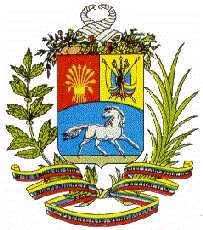

Venezuela
 |
 |
Información general
Nombre oficial: República Bolivariana de Venezuela.
Área: 916 445 km².
Costas: 2800 km.
División política:22 Estados, un Distrito Federal, dependencias federales
Estado Capital
- Distrito Federal Caracas
- Amazonas Puerto Ayacucho
- Anzoátegui Barcelona
- Apure San Fernando de Apure
- Aragua Maracay
- Barinas Barinas
- Bolívar Ciudad Bolívar
- Carabobo Valencia
- Cojedes San Carlos
- Delta Amacuro Tucupita
- Falcón Coro
- Guárico San Juan de los Morros
- Lara Barquisimeto
- Mérida Mérida
- Miranda LosTeques
- Monagas Maturín
- Nueva Esparta La Asunción
- Portuguesa Guanare
- Sucre Cumaná
- Táchira San Cristóbal
- Trujillo Trujillo
- Yaracuy San Felipe
- Zulia Maracaibo
Unidad monetaria: Bolívar
1 Bolívar = 100 céntimos.
Idiomas: Español (oficial); italiano, inglés, portugués, chino (no oficiales) (son hablados por minorías étnicas residentes en el país) arauaco, caribe, guajiro, etc..
Fiesta nacional: 5 de julio, Firma del Acta de la Independencia.
Gentilicio: Venezolano.
Hora oficial: GMT -4 horas (normal/verano).
Miembro de: ONU, OEA, OPEP, ALADI, Pacto Andino.
Curiosidades
Situada, en el estado de Bolívar en Venezuela, se encuentra la catarata mas alta del mundo, El Salto del Angel.
Venezuela posee mas de 70 ilas e islotes entre ellas: Margarita, Cubagua y Coche que forman el Estado de Nueva Esparta y el archipiélago de los Roques.
El territorio venezolano presenta seis regiones bien diferenciadas geográficamente: el litoral caribe;o, los Andes, la depresión del Lago Maracaibo, los Llanos, La Gran Sabana del Caroní y la zona entre la Costa y Los Lanos.
Información adicional en Internet.
Perfil Ecónomico
Perfil Demográfico
Población: 23.054.210 hab.
Densidad de población: 27,5 hab/km².
Fuente: http://www.sisov.mpd.gov.ve/cgibin/RpWebEngine.exe/PortalAction?
Perfil Cultural
Alfabetismo: 93 %.
Religión:
- Católicos: 93,1%
- No religiosos: 3,1%
- Protestantes: 1,1%
- Religiones tribales: 1,0%
- Judíos: 0,1%
- Ortodoxos: 0,1%
- Otros: 1,5%
Algunas figuras notables:
- Cecilio Acosta (1818-1881). Escritor
- Andrés Bello (1781-1865). Polígrafo, educador, filólogo, poeta, ensayista y crítico literario
- Andrés Eloy Blanco (1897-1955). Poeta
- Rufino Blanco Fombona (1874-1944).Gobernador, diputado, polígrafo y poeta
- Teresa Carreño (1853-1917). Compositora y pianista
- Rómulo Gallegos (1884-1969). Ministro, diputado y novelista
- Arturo Michelena (1863-1898). Pintor
- Jesús Rafael Soto (1923). Pintor
- Arturo Uslar Pietri (1906). Novelista
- José María Vargas (1786-1854). Médico y político.
Lugares declarados patrimonio mundial por la UNESCO
- Coro y su puerto.
Sistema de Gobierno
Constitución vigente: Enero de 1961.
Sistema ejecutivo: Presidente (elegido por sufragio universal por un término de cinco años), Consejo de Ministros (veinticinco ministros).
Sistema legislativo: Senado (cincuenta y tres miembros, dos por cada estado, incluido el Distrito federal, más los representantes de las minorías y los ex presidentes constitucionales), Cámara de Diputados (representantes de las minorías, y los diputados que determina la Ley, actualmente 203 electos).
Sistema judicial: Corte Suprema de Justicia, cinco cortes superiores en el Distrito Federal, juzgados superiores en cada estado, y tribunales de primera instancia. Además, hay un Consejo de Judicatura. Los magistrados de la Corte Suprema son nombrados por el Congreso Nacional.
Gobierno subdivisional: Veintidós estados, un distrito federal, 290 municipios autónomos, 892 municipios foráneos, municipios urbanos, parroquias y municipios capitales. Las autoridades estatales y municipales son elegidas por voto popular directo, con excepción del gobernador del Distrito Federal, quien es nombrado por el Presidente de la República.
Aproximación histórica
Los primeros exploradores que llegaron a la región de Maracaibo, la denominaron "pequeña Venecia", al ver las chozas levantadas sobre pilotes. Asomada al Mar de las Antillas, Venezuela limita con Guyana, por el este, con Brasil, por el sur y con Colombia por el oeste.
En el territorio venezolano vivieron los caribes y los arauacos. Los caribes eran belicosos guerreros que se desplazaban por el territorio continental. Los arauacos eran el grupo más extendido, que habitó en distintas partes de América y era un pueblo de cazadores y pescadores que también conoció el cultivo de la tierra.
Descubierta por Colón en su tercer viaje en 1498, Venezuela tuvo un desarrollo más lento debido a la carencia de mano de obra y minas. El territorio venezolano fue administrado por Santo Domingo y Bogotá hasta que se creó en 1777 la Gran Capitanía de Venezuela que sentó las bases para la unidad territorial del nuevo país.
La independencia se proclamó en 1811 y consolidarla duró alrededor de 10 años, en una lucha sangrienta y sin parangón en América. Los últimos restos del ejercito español fueron derrotados en 1821, en Carabobo. Simón Bolívar héroe máximo de la independencia y presidente de la Gran Colombia, integrada por Colombia, Venezuela y Ecuador, mantuvo esta unidad hasta 1829. Un año después Venezuela inició su vida política como nación independiente.
En la superficie de Venezuela se distinguen regiones muy variadas: las últimas estribaciones de los Andes y la cordillera de la costa, al noroeste, en cuyas mesetas se encuentran Caracas, Valencia y Mérida. La cuenca del lago de Maracaibo, al oeste, con su riqueza petrolera, la región de los llanos con unos 300 000 kilómetros cuadrados, al este y al sur. Una amplia meseta que configura la región de Guayana, quebrada por algunas sierras que aumentan hacía el sur y donde se encuentra el famoso "Salto del Angel". El río Orinoco, uno de los mayores del mundo, drena aproximadamente el 80% de su territorio.
Venezuela es uno de los primeros productores de petróleo del mundo lo que es la base de su economía. Posee además grandes reservas de mineral de hierro, carbón, aluminio, azufre, oro, bosques y un gran potencial hidroeléctrico. Además de la industria petroquímica, destaca la siderúrgica y la industria del cemento. Su capital Caracas tiene algo más de dos millones de habitantes.
«-- ir al comienzo
«-- regresar